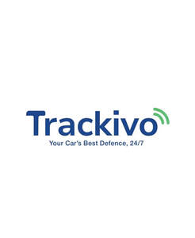

Trade Mark Journal No.2025/029 18 July 2025
UK00004226858 30 June 2025 (9,38,42,45)

- Class 9
- Downloadable mobile applications for real-time GPS tracking of vehicles, theft-alert notifications, speed-limit and geofence monitoring, and remote vehicle immobilization; Computer software recorded on media or downloadable from the internet for monitoring, controlling and securing vehicles; Electronic telematics hardware units and vehicle-mounted immobilizer devices for use in conjunction with vehicle-tracking software; Application programming interfaces (APIs) for integration of vehicle-tracking and immobilization functions into third-party software.
- Class 38
- Telecommunications services for the transmission of location and status data relating to vehicles; Data broadcast and streaming services enabling real-time delivery of GPS-based tracking information to users’ devices.
- Class 42
- Software as a service (SaaS) services featuring applications for monitoring, controlling and securing vehicles via GPS and telematics data; Platform as a service (PaaS) services enabling users and third-party developers to access vehicle-tracking and immobilization functions via APIs; Design, development, updating and maintenance of computer software for vehicle-tracking, theft prevention and security analytics.
- Class 45
- Vehicle-monitoring and security services for theft prevention, including real-time alerting and remote immobilization; Private-investigator services for stolen-vehicle recovery, including liaising with law-enforcement authorities to locate and return immobilized vehicles; Security consultancy and advisory services in the field of vehicle anti-theft protection and telematics.
TRACKIVO TECHNOLOGIES LTD